plot() draws a cgraph with grid graphics. For node placement, you can use the layered layout from Sugiyama.jl, one of the built-in layouts, or provide your own layout:
There are many conventions for drawing causal graphs. For example, you might box conditioned variables, dash latent variables, draw <-> as a dashed arc, or use different colors for exposures and outcomes.
plot() does not impose any of these conventions by default. Instead, you can use its styling options, global defaults, and layouts to choose the conventions that make sense for your application1.
Basic usage
You can pass any cgraph to plot(), and all edge marks are supported:
As an example, here is the DAG from Figure 6.5 of Peters, Janzing and Schölkopf (2017):

plot() draws the graph right away and returns a cgraph_plot object invisibly. Printing it, or passing it to plot() again, redraws it, and its grob element is the grid grob, so you can also draw it yourself with grid::grid.draw():
There are four main areas of styling:
- Layout: where nodes are placed
- Styling nodes: node appearance
- Styling edges: edge appearance
- Labels and titles: text and annotations
If you want to set defaults for an entire project, you can use plot_options(). Arguments passed to plot() still take precedence, and plot_options(plot_default_options()) resets to the built-in defaults:
plot_options(node_style = list(fill = "lightblue"), edge_style = list(lwd = 2))Every field in node_style and edge_style applies to all nodes or edges. node_style$by_node and edge_style$by_edge override fields for specific nodes and edges, which otherwise keep the global value:
plot(
dag,
node_style = list(by_node = list(Y = list(fill = "lightskyblue"))),
edge_style = list(
col = "gray60",
by_edge = list(K = list(Y = list(col = "#DC143C")))
)
)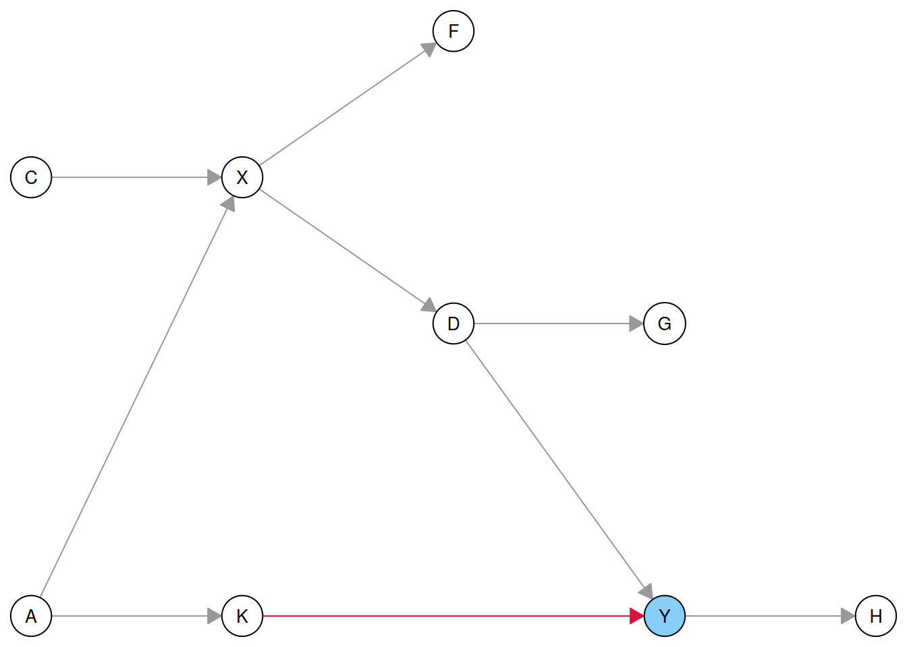
Only Y is filled blue; the other nodes keep the default white. The K --> Y edge is crimson, and the global col turns every other edge gray. The sections below list the fields each style list accepts.
Layout
The layout argument controls where the nodes are placed. It defaults to "sugiyama" for a DAG, and to "stress" otherwise.
plot(dag, layout = "stress")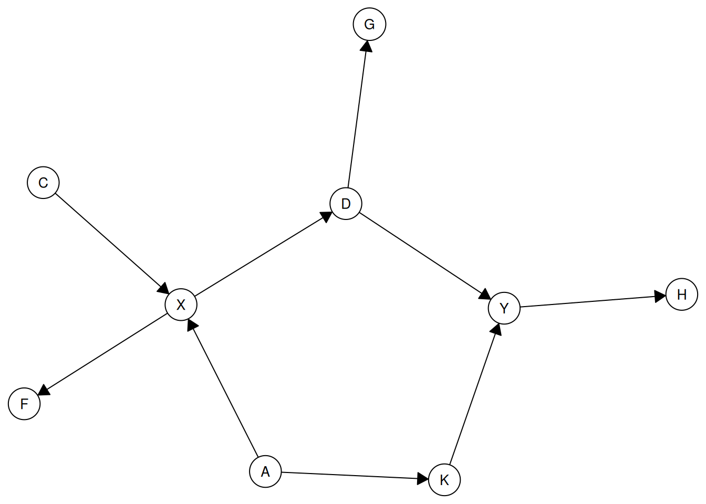
You can use these names for the built-in layouts. "sugiyama" comes from Sugiyama.jl, while the others are implemented in R; see ?cgraph_layout for details:
layout |
Algorithm |
|---|---|
"sugiyama" |
Sugiyama (layered) layout |
"stress" |
Stress majorization |
"shell" |
Nodes evenly spaced on a circle |
"squaregrid" |
Square grid |
For "sugiyama", direction ("right", the default, "down", "up", or "left") sets which way the layers flow:
plot(dag, direction = "down")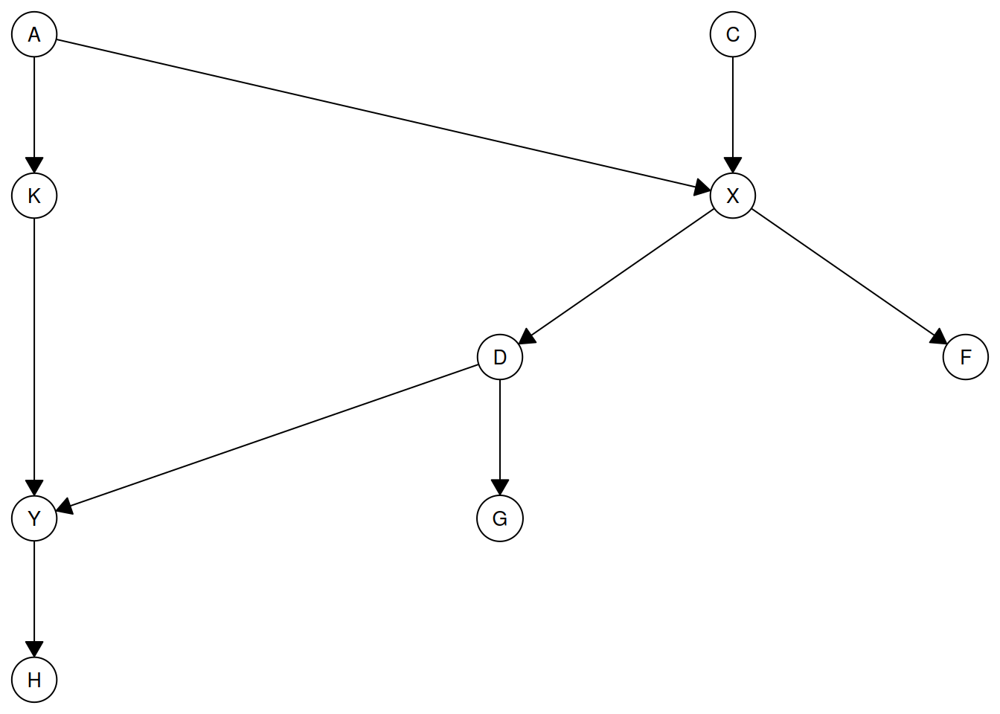
If you want to place the nodes yourself, you can pass explicit positions instead of a name. You can either use a named list of c(x, y) pairs keyed by node name, or a data.frame with name, x, and y columns:
plot(
dag,
layout = list(
A = c(0, 1),
C = c(0, -1),
K = c(1, 1),
X = c(1, -1),
D = c(2, -1),
F = c(2, -2),
Y = c(3, 0),
G = c(3, 1),
H = c(4, 0)
)
)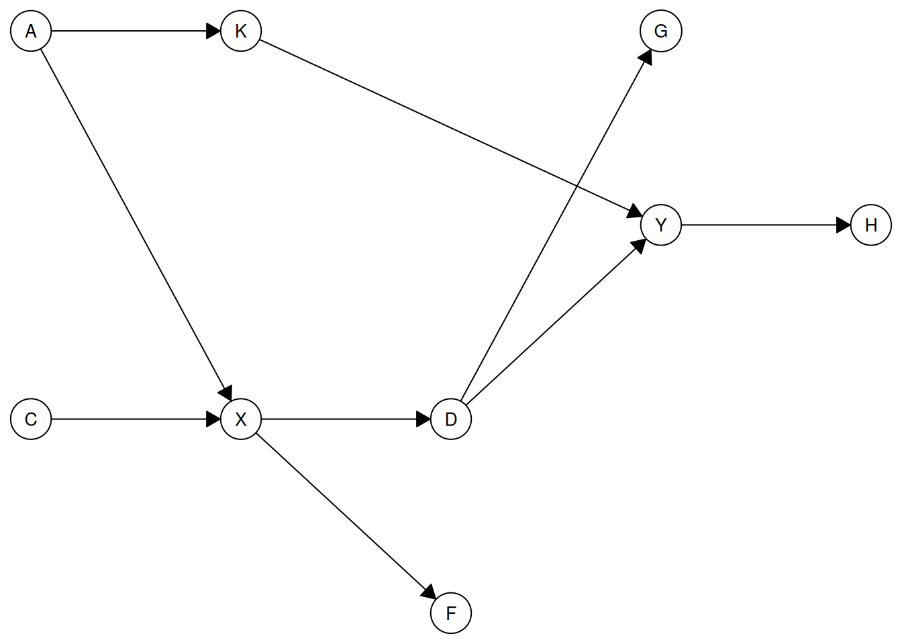
You can compute a starting layout using cgraph_layout(), and then manually adjust a few nodes:
positions <- cgraph_layout(dag, method = "stress")
positions[positions$name == "G", c("x", "y")] <- c(1, 1.5)
plot(dag, layout = positions)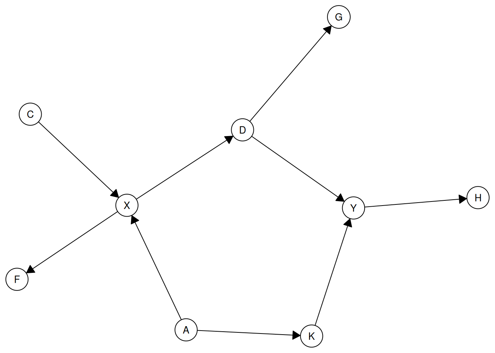
Sugiyama.jl implements its own routing using dummy nodes. If you prefer the automatic Bezier-curve routing used by plot(), you can compute the Sugiyama positions with cgraph_layout() and pass those instead:
dag_layered <- cgraph("A --> X, A --> B, X --> Y, B --> Y, A --> Y")
plot(dag_layered, layout = cgraph_layout(dag_layered, "sugiyama"))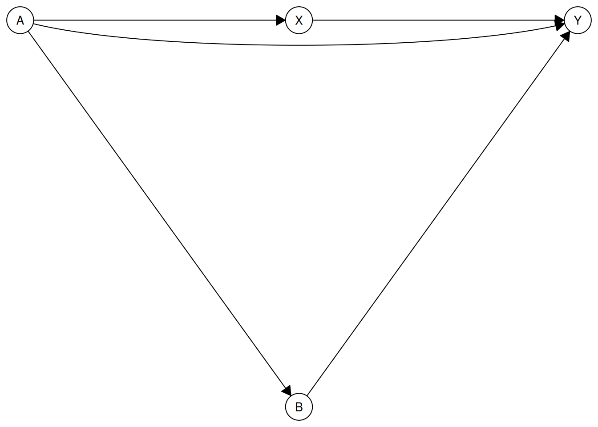
Styling nodes
node_style$by_node is a named list of per-node overrides, keyed by node name.
| Field | Default | Controls |
|---|---|---|
fill |
"white" |
fill color |
col |
"black" |
border color |
lwd |
1 |
border line width |
linestyle |
solid | border line style (any lty) |
shape |
"circle" |
node outline shape |
radius |
NULL (text-fit) |
size of each node (mm) |
padding |
2 |
clearance (mm) around each label when radius is NULL
|
size |
1 |
multiplier on the computed node size |
Combine color, border, and shape to highlight a node:
plot(
dag,
node_style = list(
fill = "lightblue",
col = "navy",
by_node = list(
A = list(fill = "salmon", col = "#DC143C"),
K = list(shape = "square")
)
)
)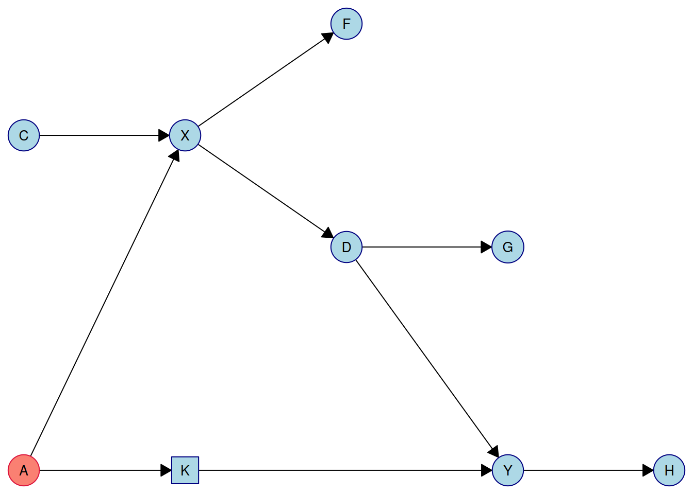
You can set shape to "circle" (the default), "square", "ellipse", or "rect". The latter two are mainly useful when you want to fit an oblong label. You can also use linestyle to style the border, for example to mark a latent variable:
If you only want to draw the node names, you can make the fill and the border transparent. Edges still stop at the (now invisible) node boundary, so you can use "rect" with a smaller padding to bring the arrowheads closer to the text:
plot(
dag,
node_style = list(
fill = "transparent",
col = "transparent",
shape = "rect",
padding = 1
)
)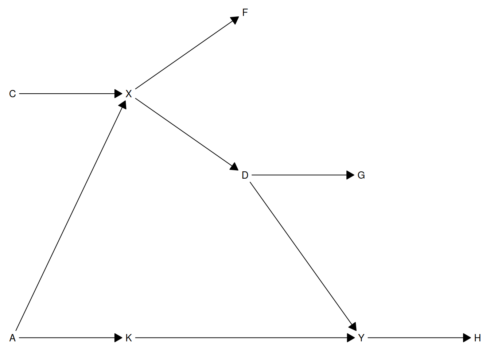
Text-fit node sizing
By default (radius = NULL), nodes are sized to fit their labels:
longlabels <- cgraph("Exposure --> Mediator --> Y_outcome")
plot(
longlabels,
node_style = list(by_node = list(Exposure = list(shape = "ellipse")))
)
If you want to control the size yourself, you can set radius explicitly:
Styling edges
edge_style can override its global fields at the following levels, checked in this order:
- one exact edge: a
.by_typeentry under a node pair inby_edge, keyed by the edge’s notation, e.g.by_edge = list(X = list(Y = list(.by_type = list("<->" = ...)))) - a node pair in
by_edge(by_edge[[src]][[dst]]), in either order - a node in
by_edge(by_edge[[node]]), for every edge touching it - an edge-type sub-list (
directed,undirected,bidirected,partially_directed,partially_undirected,partial) - the global fields of
edge_style
| Field | Default | Controls |
|---|---|---|
col |
"black" |
line / marker color |
fill |
NULL (the edge’s col) |
arrowhead fill color |
lwd |
1 |
line width |
lty |
solid | line style |
gap |
0 |
gap (mm) at edge ends |
curvature |
NULL |
how far the edge bows |
path |
NULL |
explicit waypoints for an edge’s route |
arrow_size |
3 |
length (mm) of arrowhead triangles |
circle_size |
1.5 |
radius (mm) of open-circle (o) endpoints |
Let’s style some edges by type:
admg <- cgraph("X --> Y, X <-> Z, Z --> Y", class = "ADMG")
plot(
admg,
edge_style = list(
directed = list(col = "steelblue"),
bidirected = list(col = "#DC143C", lwd = 2.5)
)
)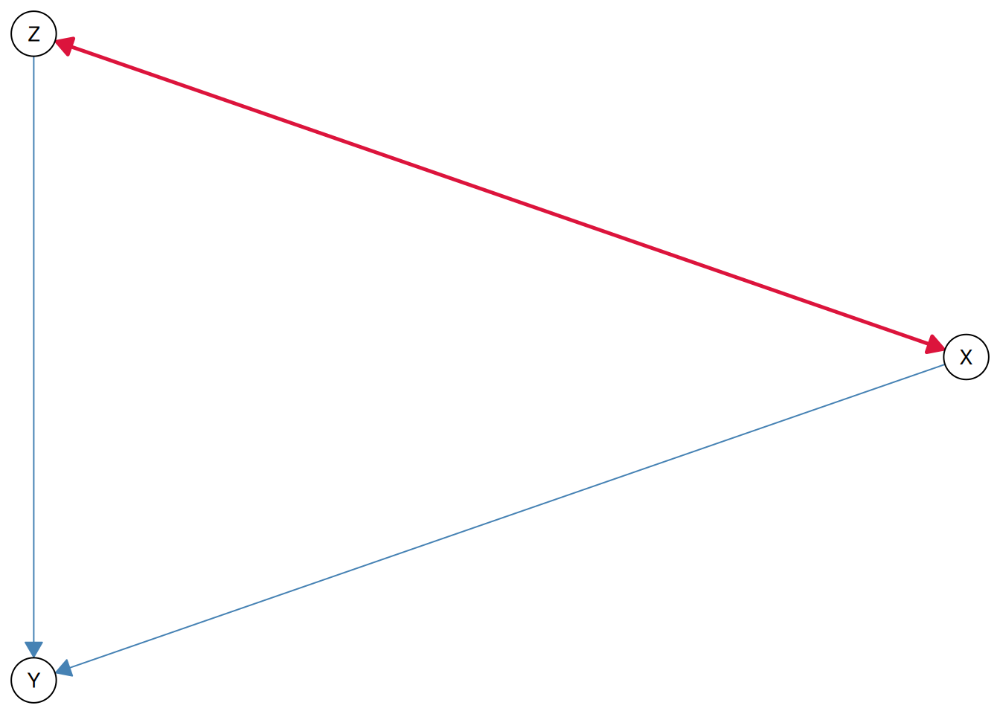
fill controls the arrowhead’s fill color. By default (NULL), it uses the edge’s resolved col, so arrowheads are solid. If you want hollow, outline-only arrowheads, pass NA:
lty styles the edge line itself. For example, you can use it to dash <-> edges:
If you prefer some space between each end of an edge and the node border, you can set gap:
Targeting specific edges
If you want to change something for a specific edge, you can use a node pair in by_edge:
A node pair is unordered. This means that if an ADMG has both X --> Y and X <-> Y, the pair applies to both edges. If you need to distinguish them, add a .by_type entry instead:
shared <- cgraph("X --> Y, X <-> Y", class = "ADMG")
plot(
shared,
edge_style = list(
col = "steelblue",
by_edge = list(
X = list(Y = list(.by_type = list("<->" = list(col = "#DC143C"))))
)
)
)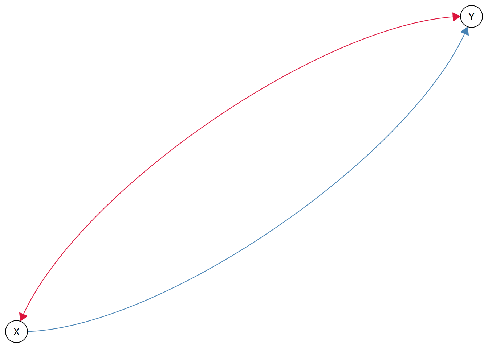
For symmetric edges, the order does not matter, so by_edge$Y$X with "<->" is the same key as by_edge$X$Y with "<->".
Notice that the two edges between X and Y are automatically curved apart, so they don’t overlap.
Curvature and automatic routing
curvature bows an edge into an arc instead of drawing it straight. Positive values bow the edge to the left when travelling from src to dst, while negative values bow it to the right.
If a straight src --> dst edge would pass too close to a non-incident node, plot() automatically bends it around that node with a Bezier curve. Edges with nothing in the way are always drawn straight.
detour <- cgraph("A --> X + Y, X --> Y")
plot(detour, layout = list(A = c(0, 0), X = c(1, 0), Y = c(2, 0)))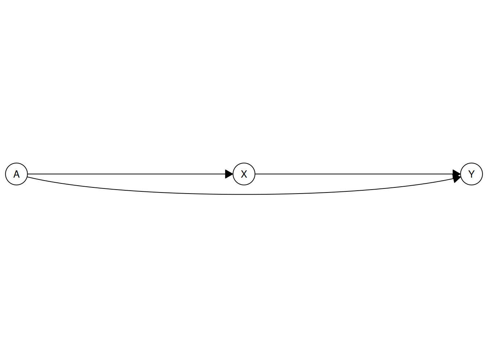
If you want to disable this automatic routing for a particular edge, you can set its curvature to 0:
Explicit edge paths
Edges are normally drawn as straight lines unless automatic routing is needed. If you want to control the path yourself, you can set path and provide intermediate points for the edge, in the coordinates of the layout. For example, the edge K --> Y below is drawn through the point (0.5, -0.25):
Labels and titles
Labels
label_style$by_node overrides the node label fields per node, like node styling.
| Argument / field | Default | Controls |
|---|---|---|
labels |
NULL |
text drawn in each node |
label_style$col |
"black" |
node label text color |
label_style$fontsize |
10 |
node label font size |
label_style$fontface |
"plain" |
node label font face |
label_style$fontfamily |
"" |
node label font family |
By default, each node is labelled with its own name. If you want different labels, you can set them with labels. Node sizing takes multi-line labels into account, so the nodes grow to fit:
plot(
cgraph("A0 --> L1 --> A1 --> Y, A0 --> Y + A1"),
labels = c(
A0 = "Treatment\nat baseline",
L1 = "Confounder\nat time 1",
A1 = "Treatment\nat time 1"
)
)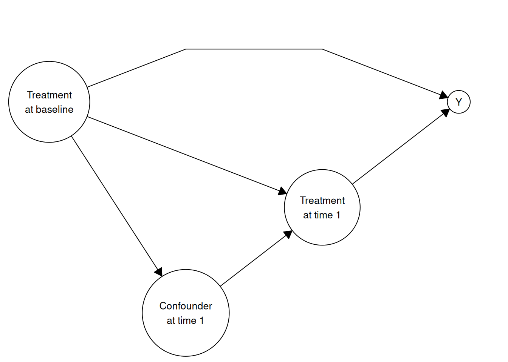
You can use col and fontsize to style the label text:
Edge labels
Edge label fields are part of edge_style, so they use the same levels as edge styling.
| Field | Default | Controls |
|---|---|---|
label |
NULL |
text drawn along the edge |
label_col |
"black" |
edge label text color |
label_fontsize |
9 |
edge label font size |
label_fontface |
"plain" |
edge label font face |
label_fontfamily |
"" |
edge label font family |
label_shift |
0.5 |
position along the edge, 0 (source) to 1 (destination) |
label_distance |
NULL |
perpendicular gap (mm) from the edge; NULL scales with label_fontsize
|
label_rotation |
NULL |
text angle in degrees; NULL follows the edge’s own angle |
Let’s add a label to the edge K --> Y:
By default, the label follows the edge’s angle. You can use label_shift and label_distance to move it along or away from the edge:
plot(
dag,
edge_style = list(
label_shift = 0.75,
label_distance = 4,
by_edge = list(K = list(Y = list(label = "hi")))
)
)If an edge is steep or curved, following its angle can make the label hard to read. You can use label_rotation to give it a fixed angle instead:
Titles
| Argument / field | Default | Controls |
|---|---|---|
main |
NULL |
plot title; NULL means no title |
title_style$fontsize |
14 |
title font size |
title_style$col |
"black" |
title color |
title_style$fontface |
"bold" |
title font face |
title_gap |
grid::unit(1, "lines") |
gap between the title and the graph |
If you want to add a title, set main:
Figure size and margins
| Argument | Default | Controls |
|---|---|---|
outer_margin |
grid::unit(2, "mm") |
padding around the whole plot |
asp |
NA |
y/x aspect ratio of the layout; NA fills the available space |
plot() draws into whatever graphics device is open, so the figure size is set the usual R way, e.g. with grDevices::png(width =, height =) or a chunk’s fig-width/fig-height. Let’s make the figure a bit larger:
plot(dag)
The default figure size works well for small examples. As your graph gets larger, labels and edges can become cramped or overlap. Increase the figure size (and, if needed, node_style$radius or label_style$fontsize) to keep larger graphs readable.
By default, node positions are stretched to fill the figure, which can distort the layout’s own proportions in an uneven figure. If you want to keep them instead, set asp = 1.
Composing into an existing figure
So far we’ve only used plot() on its own page. If you already have a grid viewport (for example, as one panel of a larger figure), you can use plot(cg, newpage = FALSE) to draw the graph there instead.
Let’s use this to draw the DAG and the ADMG side by side in one figure:
grid::grid.newpage()
grid::pushViewport(grid::viewport(layout = grid::grid.layout(1, 2)))
grid::pushViewport(grid::viewport(layout.pos.col = 1))
plot(dag, newpage = FALSE)
grid::popViewport()
grid::pushViewport(grid::viewport(layout.pos.col = 2))
plot(admg, newpage = FALSE, node_style = list(fill = "salmon"))
grid::popViewport()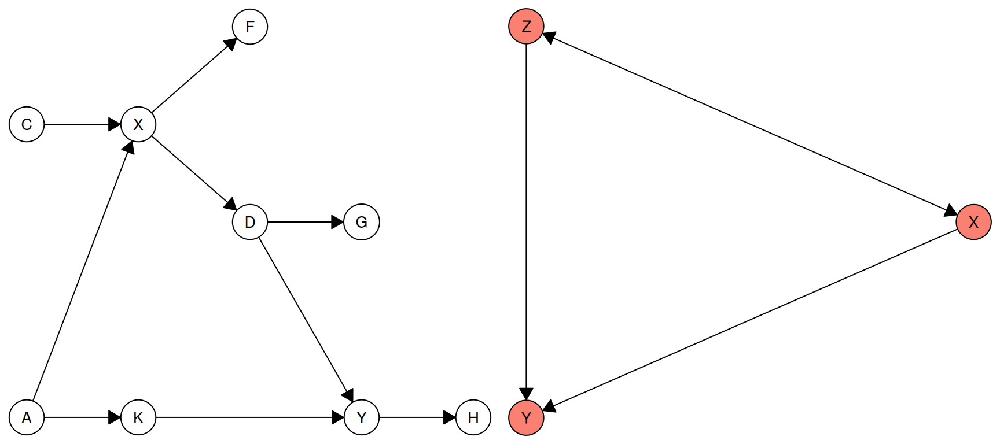
Combining options
Here we combine some of the styling options above to plot a PAG:
pag <- cgraph(
"C o-> X, D --> G + Y, X --> D + F, Y --> H, K o-> X, K --> Y",
class = "PAG"
)
plot(
pag,
layout = "stress",
node_style = list(
fill = "whitesmoke",
col = "slategray",
by_node = list(
X = list(fill = "skyblue", col = "royalblue"),
Y = list(fill = "gold", col = "darkorange"),
K = list(shape = "square", linestyle = "dashed")
)
),
edge_style = list(
col = "darkslategray",
partially_directed = list(col = "royalblue", lty = "dashed"),
by_edge = list(
K = list(Y = list(curvature = 0.3), X = list(label = "cool"))
)
),
label_style = list(
by_node = list(X = list(col = "navy"), Y = list(col = "saddlebrown"))
),
main = "A cool PAG",
title_style = list(fontsize = 18, col = "navy")
)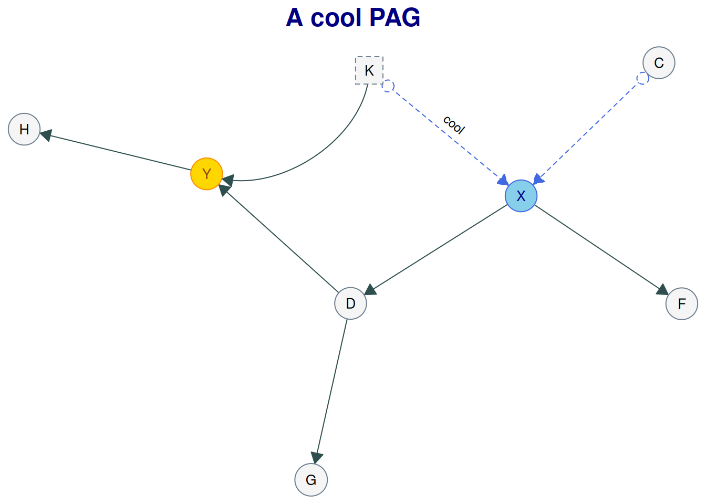